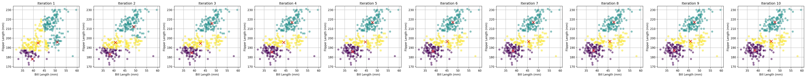
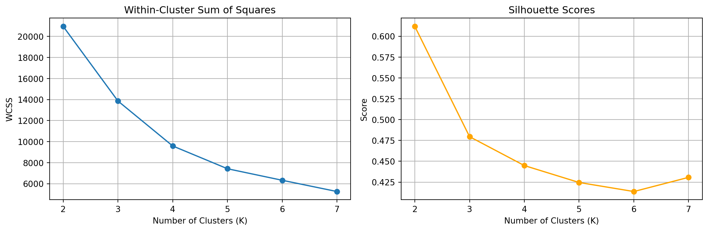
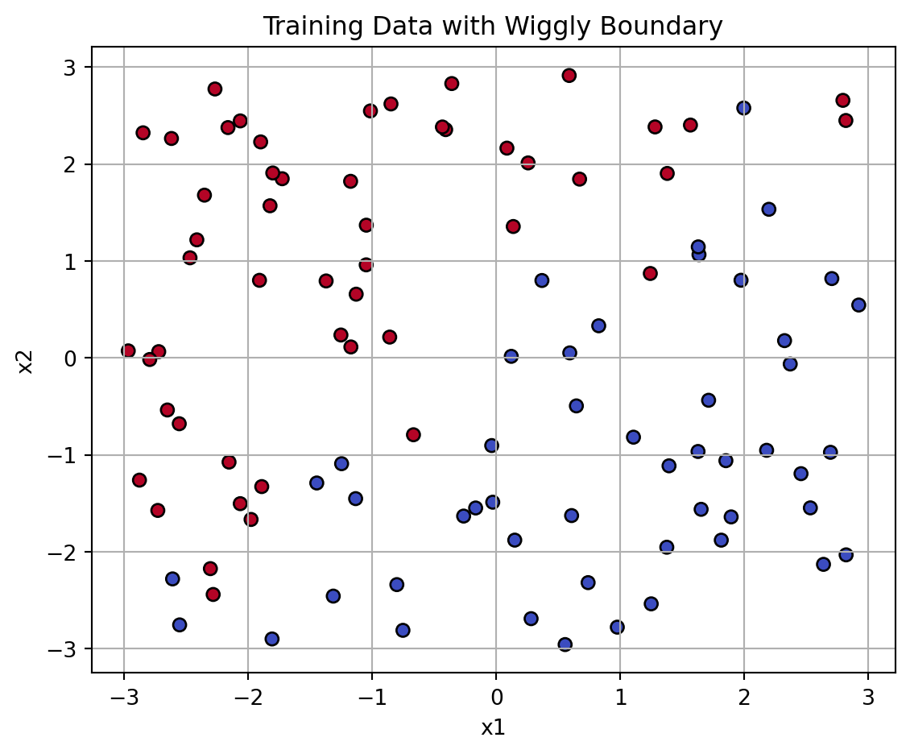
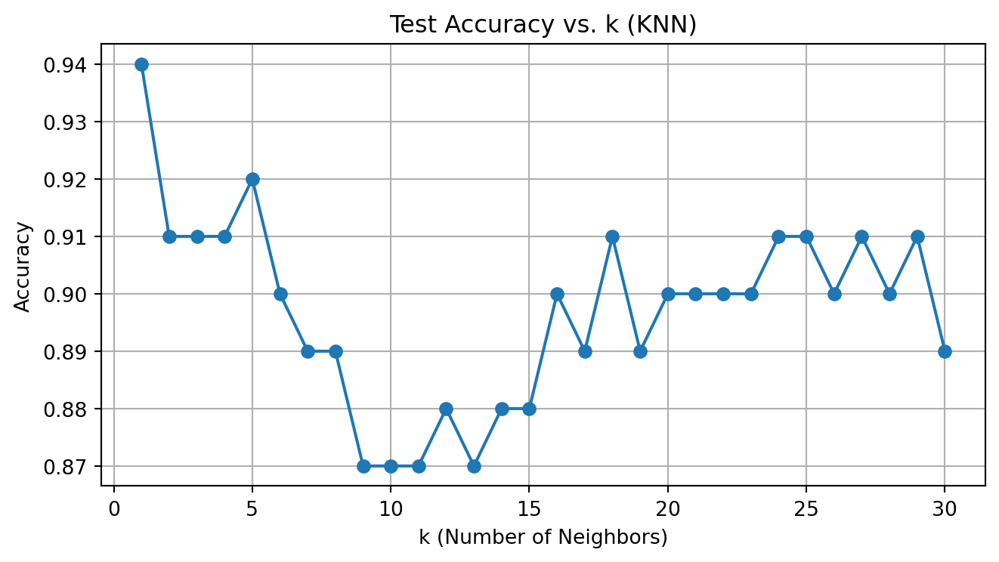

| bill_length_mm | flipper_length_mm | |
|---|---|---|
| 0 | 39.1 | 181 |
| 1 | 39.5 | 186 |
| 2 | 40.3 | 195 |
| 3 | 36.7 | 193 |
| 4 | 39.3 | 190 |
Analyses
1a. K-Means
K-Means (Step 1): Implement K-Means and Visualize Steps
We begin by implementing the K-Means clustering algorithm from scratch. To demonstrate the algorithm visually, we show how the cluster centers and labels evolve over several iterations on the Palmer Penguins dataset (using bill length and flipper length).
import numpy as np
import matplotlib.pyplot as plt
# Use numpy array for speed
X = df_kmeans.to_numpy()
# K-Means implementation
def custom_kmeans(X, k, max_iter=10, seed=42):
np.random.seed(seed)
idx = np.random.choice(len(X), k, replace=False)
centroids = X[idx]
history = []
for iteration in range(max_iter):
# Assign clusters
distances = np.linalg.norm(X[:, None] - centroids[None, :], axis=2)
labels = np.argmin(distances, axis=1)
# Save for visualization
history.append((centroids.copy(), labels.copy()))
# Update centroids
new_centroids = np.array([X[labels == j].mean(axis=0) if np.any(labels == j) else centroids[j] for j in range(k)])
# Check for convergence
if np.allclose(new_centroids, centroids):
break
centroids = new_centroids
return centroids, labels, history
# Run custom k-means
k = 3
final_centroids, final_labels, steps = custom_kmeans(X, k=k, max_iter=10)Now we visualize the first few iterations of the algorithm to see how clusters and centroids evolve.
This plot sequence shows the behavior of K-Means clustering over multiple iterations. • At each step, the algorithm assigns each point to the nearest centroid and updates the centroid as the mean of its cluster. • The red “X” markers show the centroid positions. • Convergence typically occurs in a few steps when centroids stabilize.

To evaluate how well the clusters separate the data, we compute two common metrics for different numbers of clusters (K):
• Within-Cluster Sum of Squares (WCSS): Measures compactness of clusters. Lower is better.
• Silhouette Score: Measures how similar a point is to its own cluster vs. others. Higher is better.We compute and plot both metrics for K from 2 to 7 to determine the optimal number of clusters.

The elbow plot (WCSS) and the silhouette scores suggest different optimal values of k, which is a common situation in unsupervised learning.
• WCSS (Elbow Method): The plot shows a sharp drop in WCSS from k = 2 to k = 3, and then the decrease becomes more gradual. This suggests that k = 3 may be a reasonable choice, as increasing beyond that yields diminishing returns in compactness.
• Silhouette Score: The silhouette score is highest at k = 2 and declines afterward. This indicates that when data is split into two clusters, the separation between clusters is most distinct.Conclusion:
While k = 2 achieves the highest silhouette score, the elbow in WCSS suggests k = 3 is also a plausible choice.
Given the penguins dataset likely includes three species, k = 3 aligns better with domain knowledge and provides interpretable groupings, even if the silhouette score is slightly lower.
2a. K Nearest Neighbors
# gen data -----
set.seed(42)
n <- 100
x1 <- runif(n, -3, 3)
x2 <- runif(n, -3, 3)
x <- cbind(x1, x2)
# define a wiggly boundary
boundary <- sin(4*x1) + x1
y <- ifelse(x2 > boundary, 1, 0) |> as.factor()
dat <- data.frame(x1 = x1, x2 = x2, y = y)Step 1: Generate Training Data
We generate a synthetic training dataset with 100 points and two continuous features, x1 and x2. The binary label y is assigned based on whether a point lies above a nonlinear “wiggly” boundary defined by:
\[ \text{boundary} = \sin(4x_1) + x_1 \]
If \(x_2 > \text{boundary}\), the label is 1; otherwise 0. This setup creates a complex boundary ideal for testing KNN performance.
Step 2: Generate Test Data
We repeat the same process with a different random seed to generate a test dataset of 100 new points. These points are used to evaluate the classification accuracy of our KNN algorithm.
import numpy as np
import pandas as pd
import matplotlib.pyplot as plt
np.random.seed(42)
n_train = 100
x1_train = np.random.uniform(-3, 3, n_train)
x2_train = np.random.uniform(-3, 3, n_train)
boundary_train = np.sin(4 * x1_train) + x1_train
y_train = (x2_train > boundary_train).astype(int)
train_df = pd.DataFrame({
"x1": x1_train,
"x2": x2_train,
"y": y_train
})
np.random.seed(24)
n_test = 100
x1_test = np.random.uniform(-3, 3, n_test)
x2_test = np.random.uniform(-3, 3, n_test)
boundary_test = np.sin(4 * x1_test) + x1_test
y_test = (x2_test > boundary_test).astype(int)
test_df = pd.DataFrame({
"x1": x1_test,
"x2": x2_test,
"y": y_test
})def euclidean(p1, p2):
return np.sqrt(np.sum((p1 - p2) ** 2))
def predict_knn(train_X, train_y, query_point, k):
distances = [euclidean(query_point, train_X[i]) for i in range(len(train_X))]
indices = np.argsort(distances)[:k]
neighbors = train_y[indices]
return int(np.round(np.mean(neighbors))) # majority votingtrain_X = train_df[["x1", "x2"]].values
train_y = train_df["y"].values
test_X = test_df[["x1", "x2"]].values
test_y = test_df["y"].values
accuracies = []
for k in range(1, 31):
preds = np.array([predict_knn(train_X, train_y, test_X[i], k) for i in range(len(test_X))])
acc = np.mean(preds == test_y)
accuracies.append(acc)train_X = train_df[["x1", "x2"]].values
train_y = train_df["y"].values
test_X = test_df[["x1", "x2"]].values
test_y = test_df["y"].values
accuracies = []
for k in range(1, 31):
preds = np.array([predict_knn(train_X, train_y, test_X[i], k) for i in range(len(test_X))])
acc = np.mean(preds == test_y)
accuracies.append(acc)Step 3: Accuracy vs. k
We evaluate the manually implemented KNN classifier on the test set for values of ( k = 1 ) to ( 30 ). For each value of ( k ), we compute the classification accuracy.
The plot above shows that accuracy first improves, then plateaus, and may slightly decline due to oversmoothing. The optimal value of ( k ) appears near the peak of the curve, which balances variance and bias in classification.
